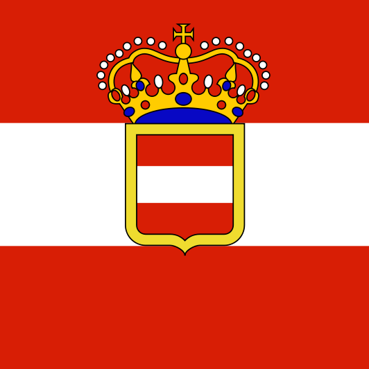
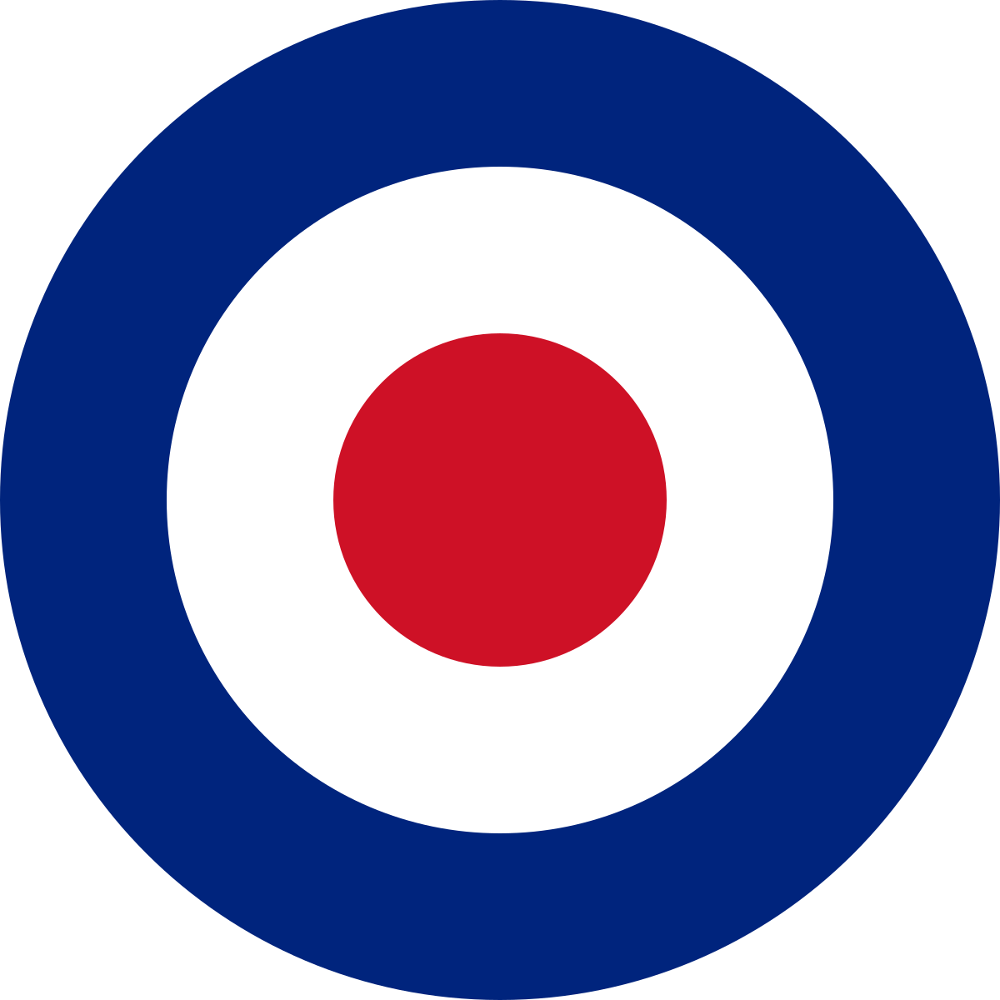
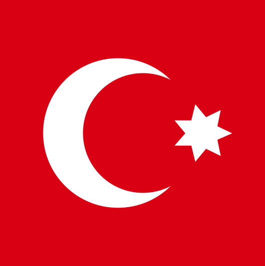
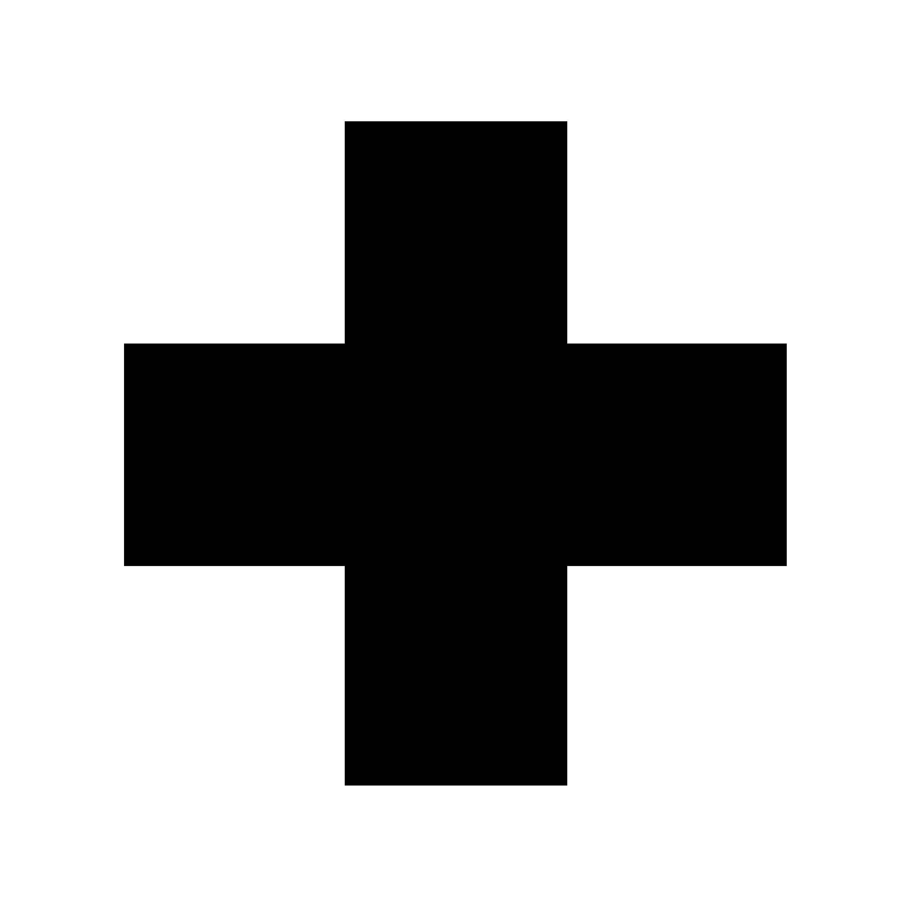
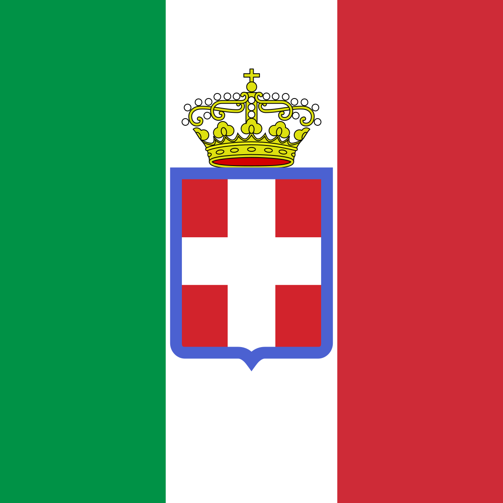
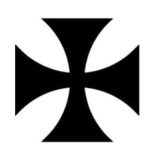
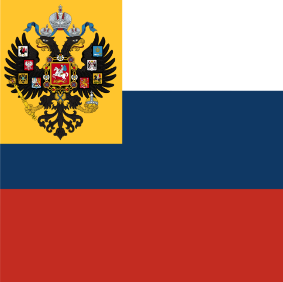
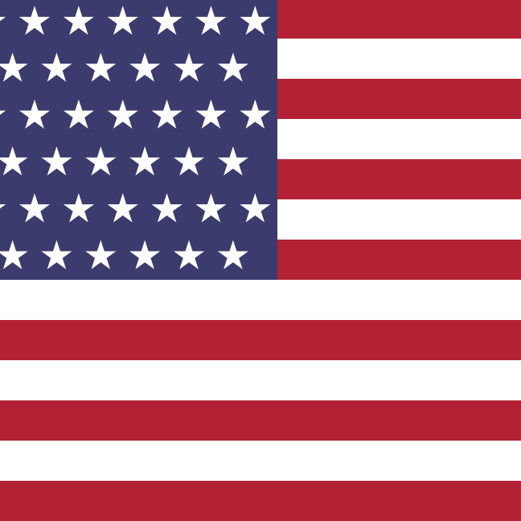
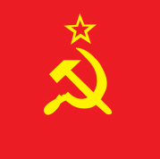

WORLD WAR ONE / TIMELINE
UNIVERSITY OF VICTORIA
-
1914
-

ARCHDUKE FRANZ FERDINAND OF THE AUSTRO-HUNGARIAN EMPIRE IS ASSASSINATED IN SARAJEVO
June 28, 1914
Franz Ferdinand and his wife, Sophie the Duchess of Hohenburg, are killed by Bosnian Serb nationalist Gavrilo Princip. The Austrian government suspects that Serbia is responsible.
-
AUSTRIA-HUNGARY DECLARES WAR ON SERBIA. WORLD WAR I BEGINS
July 28, 1914
Blaming the Serbian government for the assassinations, Emperor Franz Joseph of Austria-Hungary declares war on Serbia and its ally Russia. Through its alliance with France, Russia calls on the French to mobilise her armed forces.
-
GERMANY DECLARES WAR ON RUSSIA
August 1, 1914
With Russia mobilizing Germany declares war on Russia.
-
GERMANY DECLARES WAR ON FRANCE
August 3, 1914
Germany declares war on France, its troops march into Belgium implementing a pre-planned (Schlieffen) strategy, intended to quickly defeat the French. British foreign secretary, Sir Edward Grey, demands that Germany withdraw from neutral Belgium.
-

BRITAIN DECLARES WAR ON GERMANY
August 4, 1914
Germany fails to withdraw its forces from Belgium and so Britain declares war on Germany and Austria-Hungary. Canada joins the war. President Woodrow Wilson declares American neutrality.
-
GERMANY WINS THE BATTLE OF TANNENBERG
August 30, 1914
The Russian army invades Prussia. The Germans use their railway system to surround the Russians and inflict heavy causalities. Tens of thousands of Russians are killed and 125,000 are taken prisoner.
-
German army stopped outside paris
September 22, 1914
The advancing German army is stopped before Paris by the British and French at the First Battle of the Marne. The Germans dig in and four years of trench warfare begins.
-

Allies win first battle of ypres
November 22, 1914
The First Battle of Ypres, the last major battle of the first year of World War I, ends the Race to the Sea. The Germans are prevented from reaching Calais and Dunkirk, thus cutting off the British Army’s supply lines.
-

The Ottoman Empire declares war on the Allies
November 28, 1914
-

Christmas Truce
December 24, 1914
men from both sides on the Western Front laid down their arms, emerged from their trenches, and shared food, carols, games and comradeship.
-
1915
-
The Germans begin to use submarines against Allied merchant ships
Febuary 4, 1915
The Germans declare a submarine blockade of Britain: any ship approaching the British coast is to be considered a legitimate target.
-
The Second Battle of Ypres begins
April 22, 1915
Germany uses poison gas for the first time in a major offensive. 6,000 Allied troops die within 10 minutes.
-
Ottomans begin the Armenian Genocide
April 22, 1915
the Ottoman government begins the systematic mass murder and expulsion of 1.5 million ethnic Armenians carried out in Turkey and adjoining regions.
-

The Allies attack the Ottoman Empire at the Battle of Gallipoli
April 25, 1915
Allied forces land in the Gallipoli region of the Dardenelles. The Turkish troops have had plenty of time to prepare for the Allied land assault of the peninsula.
-
The British liner Lusitania is sunk by a German U-Boat
May 7, 1915
1,195 civilians were killed. This act sparks international outrage and contributes to the United States joining the war against Germany.
-

Italy decalares war on Germany and Austria
May 23, 1915
-
Germans take poland from the russians
August, 1915
German troops capture Warsaw from the Russians. Having removed Russian forces from much of Poland, Germany ends its offensive against Russia.
-
Battle of Loos
September 25 - 28, 1915
British troops release 140 tons of chlorine gas into the German lines. Thanks to shifting winds however, some of the gas is blown back, gassing British soldiers in their own trenches.
Allied forces retreat back to where they began. The Allied attack has cost 50,000 causalities.
-
Allies end Dardenelles Campaign
December 18, 1915
Allies evacuate from Gallipoli. Of the half-a-million Allied troops who took part in the campaign, over a third have either been killed or injured. Turkish losses are even greater.
-
1916
-
The Battle of Verdun begins between France and Germany
Febuary 21, 1916
the Germans launch a massive attack against the French at Verdun, in what will become the longest and one of the bloodiest battles of the war.
-

the Battle of Jutland
May 31, 1916
The largest naval battle of the war, the Battle of Jutland, is fought between Britain and Germany in the North Sea.
-

Brusilov Offensive
June 4, 1916
In an attempt to relieve pressure on the British and French armies along the Western Front, Russia launches its Brusilov Offensive against Austro-Hungary in Carpathia (modern day Ukraine).
-
the Battle of the Somme
July 1, 1916
The battle is an effort to draw German troops away from Verdun. By the end of the offensive the allies gain six miles, with casualty counts of 419,000 British, 194,000 French and 650,000 Germans.
-
Brusilov offensive ends
September 20, 1916
The Austro-Hungarian Army is all but wiped out, with 1.5 million men lost. Russian casualties are numbered at half a million.
-
Verdun Assault ends
December 18, 1916
After almost ten months the German attack on Verdun ends, with the French holding their positions. The cost of the longest battle of the war is more than a quarter of a million deaths and at least a million wounded.
-
1917
-

The British intercept the Zimmerman Telegram
January 19, 1917
The British intercept the Zimmerman Telegram in which Germany tries to convince Mexico to join the war. This will result in the United States declaring war on Germany.
-
Russian Revolution Begins
March 8, 1917
The Russian Revolution begins. Tsar Nicholas II is removed from power on March 15.
-
The United States enters the war
April 6, 1917
The United States of America declares war on Germany.
-
Canadian troops capture Vimy Ridge
April 13, 1917
The Canadians seize ground of great military importance, and inflict heavy casualties on the German Army.
-
U.S. Troops arive in France
June 26, 1917
The first U.S. troops, men of the 1st Division, begin to arrive in France.
-
the Third Battle of Ypres (Passchendaele) begins
July 31 - November 6, 1917
In the three and half months of the offensive, British and Empire forces had advanced five miles and both sides had suffered horrendous casualties.
-
Battle of Isonzo
November 7, 1917
Austria-German forces break through the alpine front at Caporetto. Italian losses total more than 300,000
-

Bolsheviks overthrow the Russian government
November 7, 1917
The Bolsheviks overthrow the Russian government and install a Communist one under Lenin.
-
Soviet Russia and Germany Begin peace talks
December 22, 1917
-
1918
-
peace treaty between Soviet Russia and the Central Powers
March 3, 1918
The humiliating terms of the treaty effectively surrenders one third of Russia’s population, half of her industry and 90% of her coal mines.
-
Ludendorff Offensive Begins
March 21, 1918
With 50 divisions now freed by the surrender of Russia, Germany realises that its only chance of victory is to defeat the Allies quickly before the huge human and industrial resources of America are deployed.
-
the Second Battle of Marne begins
July 15, 1918
The final phase of the great German spring push. The heavy toll on the German Army from the previous Spring Offences is beginning to show, with depleted and exhausted troops.
-
Tsar Nicholas II Murdered
July 16, 1918
The former Russian Tsar Nicholas II, his wife, and children, are captured and murdered by the Bolsheviks.
-
the Battle of Amiens
August 8, 1918
the opening phase of the Allied Hundred Days Offensive, that will ultimately lead to the end of World War I. Allied armoured divisions are used to smash through the once impregnable German trenches.
-
The Meuse-Argonne offensive begins
September 26, 1918
The final allied offensive of the war, where allied forces slowly pushed German forces out of France and Belgium.
-
France Retaken from Germany
October 15, 1918
The Allies have now taken control of almost all of German-occupied France and part of Belgium.
-
Germany signs an armistice with the Allies
November 11, 1918
At the 11th hour of the 11th day of the 11th month, in the French town of Redonthes, Germany signs an armistice with the Allies – the official date of the end of World War One.